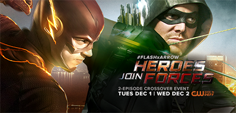
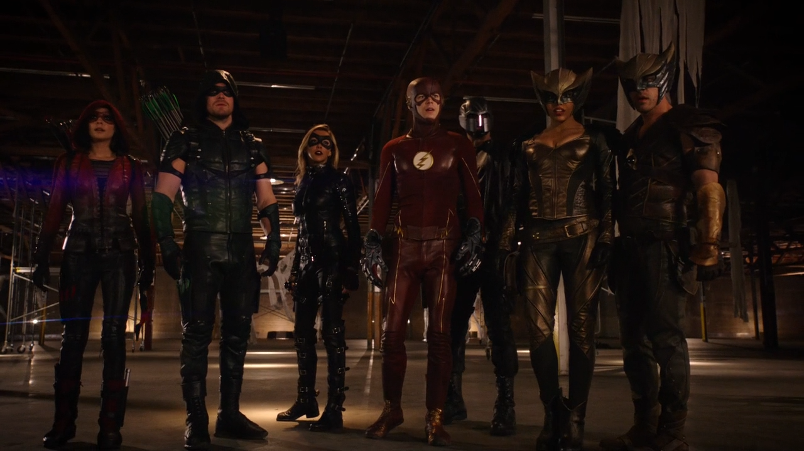
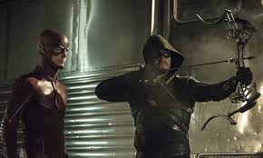
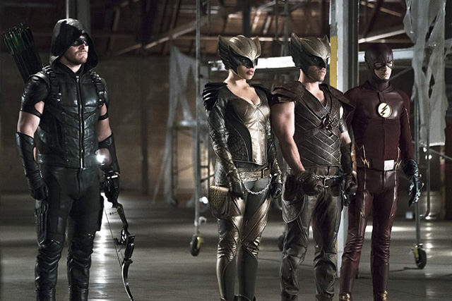
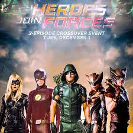

Heroes Join Forces is the name of the second annual Arrowverse crossover event between The Flash and Arrow. It also served as a set-up for DC's Legends of Tomorrow by introducing new characters who would be featured in that series. The crossover aired over two nights from December 1 to December 2, 2015.
| Serie | Episode No. | Episode Title | Original Air Date | |
|---|---|---|---|---|
| Part 1 | The Flash | Season 2Epsiode 8 | "Legends of Today" | December 2, 2015 |
| Part 2 | Arrow | Season 4Epsiode 8 | "Legends of Yesterday" | December 2, 2015 |

Vandal Savage arrives in Central City and sets his sights on Kendra Saunders. After Vandal attacks Kendra and Cisco, they turn to Barry for help. Realizing how dangerous Vandal is, Barry takes Kendra to Star City and asks Oliver and Team Arrow to hide her until he can figure out how to stop Vandal. However, things quickly go from bad to worse when a man with wings AKA Hawkman shows up and flies off with Kendra. Oliver and Barry take Kendra and Carter Hall to a remote location to keep them hidden from Vandal while they figure out how to defeat him. Malcolm arranges a meeting between Vandal, Green Arrow and The Flash that doesn't go as planned. Meanwhile, Felicity, Thea, Diggle and Laurel work with Team Flash to come up with a weapon powerful enough to destroy Vandal Savage.
 
Vandal Savage arrives in Central City looking to kill Kendra Saunders. After he attacks Kendra and Cisco Ramon, Barry Allen takes Kendra to Star City and enlists the help of Oliver Queen and his team to protect her. The team is visited by Malcolm Merlyn who informs them that Savage is an immortal. Later, Kendra is kidnapped by Hawkman, but Barry and Oliver rescue her and capture him. He introduces himself as Carter Hall, and tells them he and Kendra are soulmates who have been connected for millennia. They are destined to die, be reborn, and find each other in each lifetime. Carter also reveals that Savage has killed the pair several times, each time growing stronger. Savage acquires the Staff of Horus, a deadly weapon. Kendra unlocks her abilities and becomes Hawkgirl and the team decides to regroup in Central City. Oliver witnesses his ex-girlfriend Samantha Clayton with her son William, and realizes the child is likely his. Meanwhile, Caitlin Snow and Harrison Wells create a serum that will temporarily increase Barry's speed so that he can defeat Zoom. Jay Garrick initially refuses to test the serum, but changes his mind to save Wells when he is shot by Patty Spivot, who mistook him for Eobard Thawne. Jay advises against using the serum on Barry. Malcolm orchestrates a meeting between Savage, Barry, and Oliver. Savage demands they turn over Kendra and Carter or he will destroy both Central City and Star City with the Staff of Horus. Oliver has Barry perform a paternity test on William and it confirms that Oliver is William's father. Confronting Samantha, she agrees to let him see William on the condition he tell no one, including William himself, that he is the boy's father. Felicity learns of Oliver's paternity and feels betrayed because Oliver is still willing to keep secrets from her, so she ends their relationship. Barry and Oliver devise a plan to deliver Kendra and Carter as a ruse to get close enough to Savage to destroy the staff. The plan goes horribly wrong; Kendra's powers fail and Savage quickly overcomes the element of surprise and kills both her and Carter before using the staff to destroy Central City. Barry escapes and runs fast enough to go back in time to the point of the original negotiation before everyone else dies. Barry informs Oliver of his time travel and the mistakes that led to defeat. They change their approach to the plan and Barry is able to steal the staff. He and Oliver use it on Savage, turning him into ashes. Kendra and Carter decide to use their powers to help others in another city. Cisco gives Kendra a tracking device. Oliver agrees to Samantha's conditions for him to see William. Even though Barry encourages Oliver to tell Felicity about William (she never learned about him due to Barry's time traveling) he decides to continue to keep the secret from her. Malcolm collects Savage's ashes while whispering, "You owe me one, buddy."
 